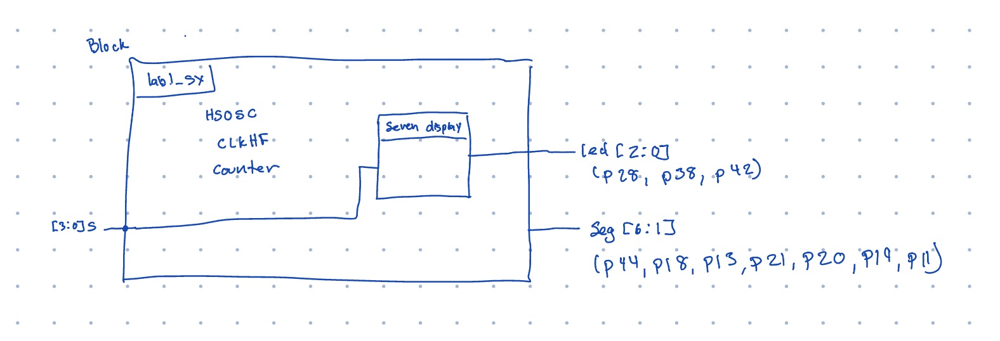
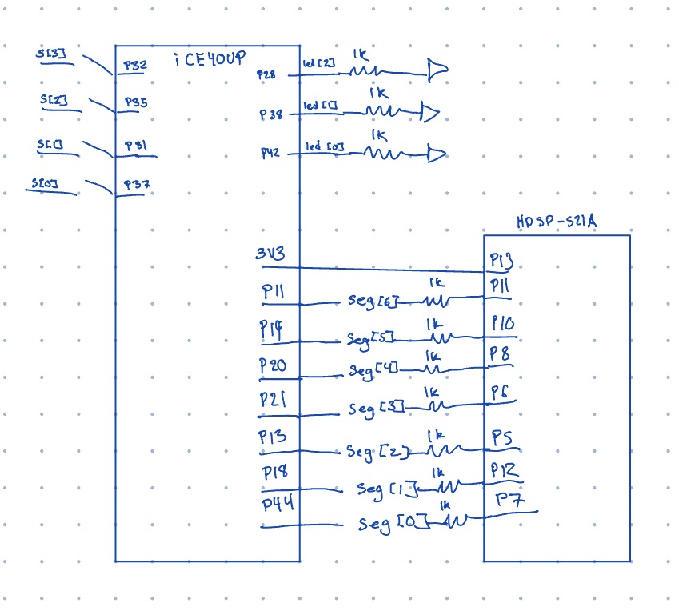
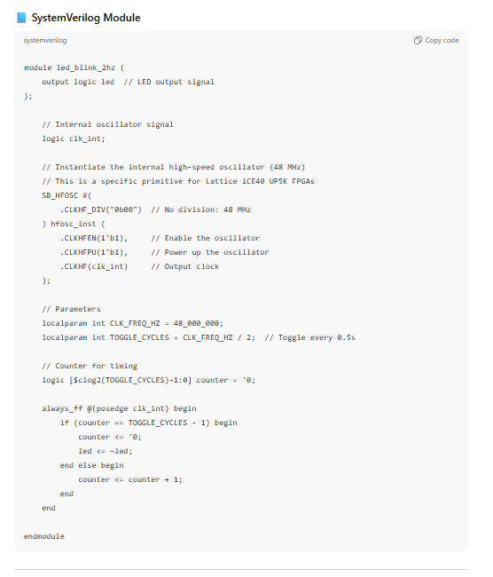
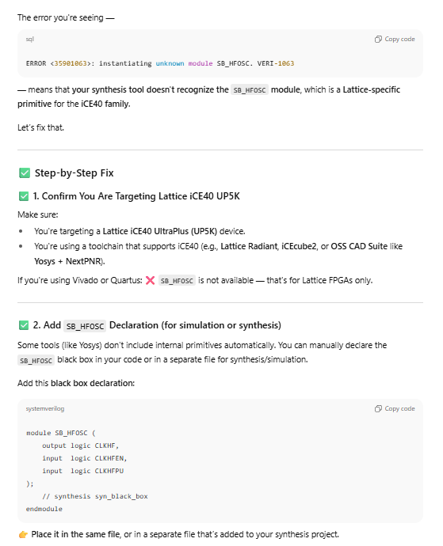
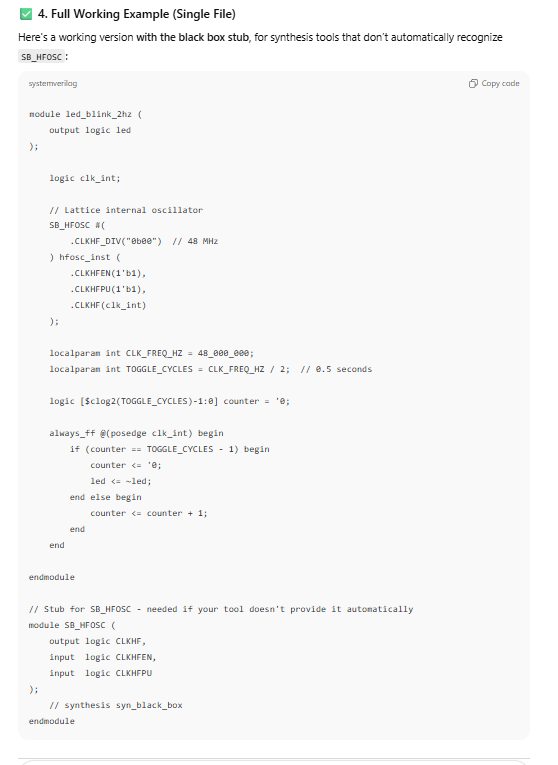
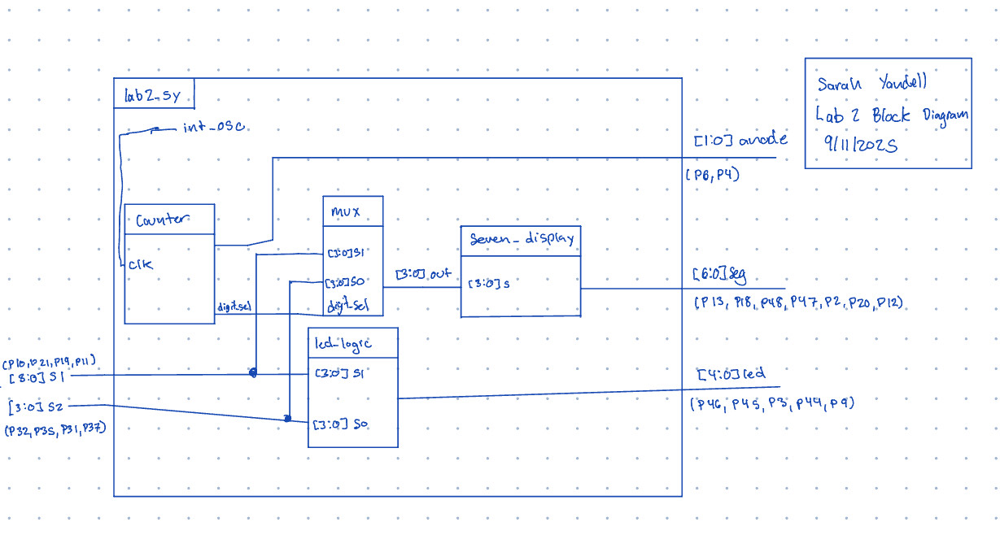
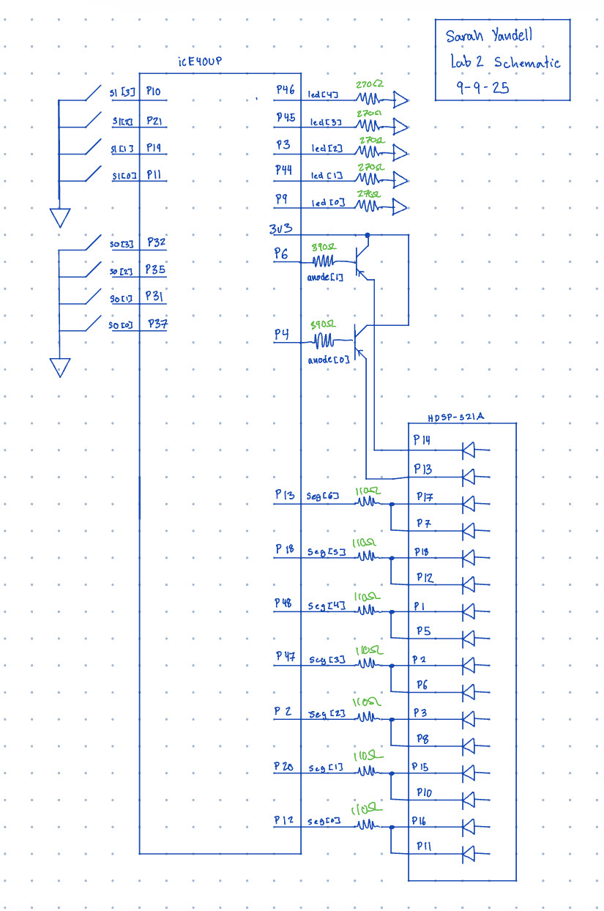
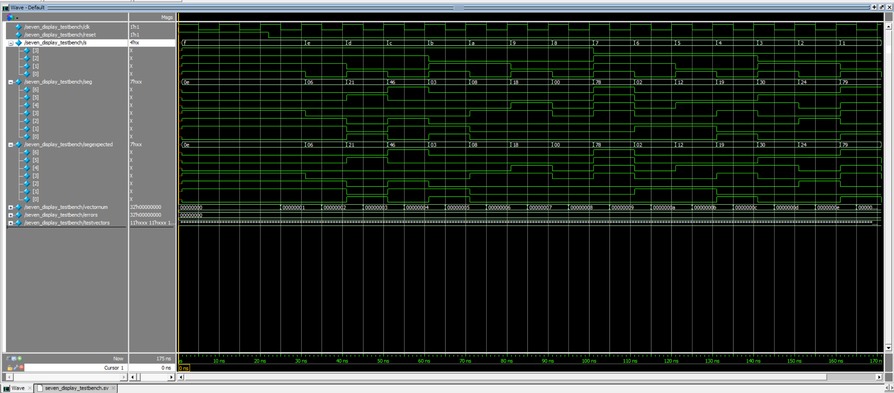
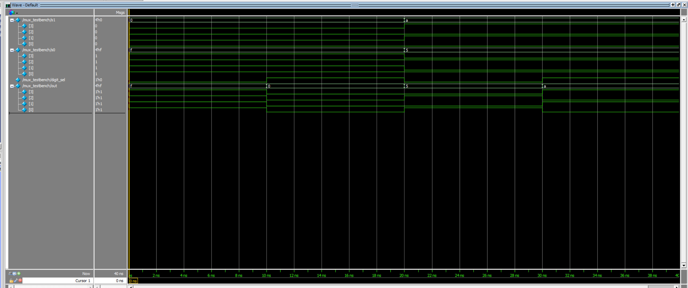
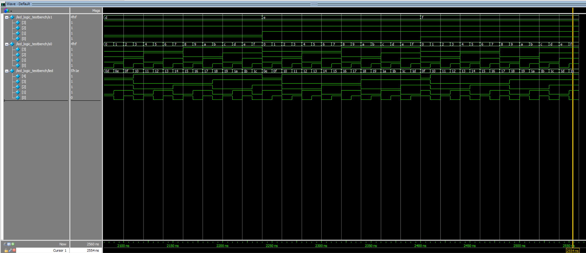

E155 Labs Page
Lab 1: FPGA and MCU Setup and Testing
Introduction
In this lab we set up and tested our FPGA and MCU by assembling a circuit board. Then we wrote verilog code to to control LEDs and a 7-segment display based on switch inputs. We followed a truth table to control LED 0 amd LED 1 beased off switch inputs. Then we set LED 2 to blink at 24 HJZ. Finally we programed the 7-segment display to dispaly the hex equilvalent of the switch inputs.
Design and Testing Methodology
For hardware I connected the FPGA and the development board to a bread board with a ribbon cable and breadboard adapter PCB. Then i connected the 7-segment display to the FPGA by powering the 7-segment display and, following the 7-segment display schematic, connecting the segments of the display to the FPGA pins with wires and resistors. For software I wrote Verilog modules for the required logic, including the LED control logic based on DIP switch input and the 7-segment display decoder. I thoroughly tested the design on hardware by toggling the DIP switches and verifying the corresponding outputs on the LEDs and 7-segment display, which consistently produced the expected results
Technical Documentation
The source code for the project can be found in the associated Github repository.
Block Diagram

The block diagram in Figure 1 demonstrates the overall architecture of the design. The top-level module lab1_sy includes one submodule: the module that encodes the 7-segment display. The top-level module also includes the controls to the LEDS, the counter, and the HSOSC.
Schematic

Figure 2 shows the physical layout of the design. The LEDS were connected using 1k resistors. The FPGA was connected in to the 7-segment display and powered with 3v. Then 1k resistors were used to ensure the output of FPGA pins would work with the 7-segment display LEDs.
Result and Discussion
I completed all the Proficiency Tasks and the Excellence tasks for the HDL & Code Specifications. However, I did not create and run a testbench in ModelSim due to time constraints. I thoroughly tested the design on hardware by toggling the DIP switches and verifying the corresponding outputs on the LEDs and 7-segment display, which consistently produced the expected results. If given more time i would have made a testbench to help catch edge cases and improve debugging and efficency. The design performs as expected and described in the lab: the switches control the correct LEDs, and the second LED blinks at approximately 2.4 Hz. Also the seven segment display displays the correct hex according to the switchs.
Conclusion
In this lab, I assembled the development board, programmed the FPGA and MCU, and implemented a Verilog design to control LEDs and a 7-segment display based on DIP switch inputs. The design performed reliably, with accurate and stable outputs. I spent approximately 25 hours completing this lab.
AI Prototype Summary
I think that it is cool that the LLM is able to generate code and their explnation of things is pretty easy to understand/follow. But the LLM is not always correct and it will lie to you. This was the code that the LLM gave to me give the prompt

When I ran this code I got an error message of
“ERROR <35901063> - synthesis: c:/users/syandell/desktop/ai/lab1_ai/source/impl_1/lab1_sy_ai.sv(16): instantiating unknown module SB_HFOSC. VERI-1063”,
When giving the error message back to the LLM it reesponded with this
 
I input the new code and got another error
So it seems that the LLM is able to explain but its implementaiton is not very good.
I think that the LLMs can be helpful in explaning and maybe making smaller/less complicated code but, they are not accurate or very good at doing higher level and more complicated things. So they should not be trusted.
Lab 2: Multiplexed 7-Segment Display
Introduction
In this lab we coded a seven segment display with two numbers to display the hex from two 4 DIP switch inputs. We also coded 5 leds to display the sum of the two hex numbers in binary.
Design and Testing Methodology
The on-board high-speed oscillator (HSOSC) from the iCE40 UltraPlus primitive library was used to generate a clock signal at 24 MHz. Then, a counter was used to divide the high frequency clock signal down so that we could quickly switch between the two digits on the seven segment display. Then
The design was developed using a seven segment display, led logic, counter, and mux modules to determine how and when to display the numbers in hex and binary.
Technical Documentation
The source code for the project can be found in the associated Github repository.
Block Diagram

The block diagram in Figure 1 demonstrates the overall architecture of the design. There is a top level module of lab2_sy and it contains 4 submodules of a counter, mux, seven segment display (seg_display) and led logic.
Schematic

Figure 2 shows the physical layout of the design. The LEDs were connected with 130 resistors, the seven segment display was connect with 100 and the transistors were connected with 330.
Result and Discussion
The design met all intended design objectives. It preformed well. When the switches changed both the seven segment display and the led changed to show the new correct values.
Testbench Simulation
  
The Figures shows a screenshot of the QuestaSim simulation for all the modules.
Conclusion
The design successfully displayed the hex of the corresponding DIP switches and the 5 external LED displayed the sum of the two currently displayed digits on the seven segment diaply in binaryusing the on-board high-speed oscillator. I spent a total of 15 hours working on this lab.
AI Prototype Summary
I think that the LLM has a lot of knowledge of verilog but it is not fully able to apply and use its knowledge. It was able to write be a lot of code was able to complile for the code without files. However, the outouts were wrong. I think that with the reference to the lab 1 it made code more similar to what I know how to use but it did not compile. The LLMs have a lot of potential but youshould not follow them blindly (even if they do output),
CODE WITHOUT FILES:
// dual_7seg_time_mux.sv // Time-multiplex a single 4->7 decoder across two 4-bit input values. // Drives two 7-bit outputs (seg0, seg1) and two anode enables (anode[1:0]). // Written in SystemVerilog.
module dual_7seg_time_mux #( parameter int CLK_FREQ_HZ = 50_000_000, // input clock frequency parameter int REFRESH_HZ = 1000, // refresh per digit (i.e. each digit enabled REFRESH_HZ times/sec) parameter bit SEG_ACTIVE_LOW = 1’b1, // common-anode typical: segments are active low parameter bit ANODE_ACTIVE_HIGH = 1’b1 // set how anode enable is driven (1 to enable if active high) ) ( input logic clk, input logic reset_n, // active low reset input logic [3:0] in0, // value for digit 0 input logic [3:0] in1, // value for digit 1 output logic [6:0] seg0, // 7-bit segments for display 0 (a..g). Updated by time-mux. output logic [6:0] seg1, // 7-bit segments for display 1 (a..g). Updated by time-mux. output logic [1:0] anode // anode[0] -> display0 enable, anode[1] -> display1 enable );
// derived constants
localparam int TICKS_PER_HALF_PERIOD = CLK_FREQ_HZ / (REFRESH_HZ * 2);
// counter width
localparam int CNT_WIDTH = $clog2(TICKS_PER_HALF_PERIOD + 1);
// refresh counter and select
logic [CNT_WIDTH-1:0] refresh_cnt;
logic sel; // 0 => show in0, 1 => show in1
logic [6:0] decoder_out;
// 4->7 decoder (hex) function
function automatic logic [6:0] decoder4to7(input logic [3:0] nibble);
// segments bit order: {a,b,c,d,e,f,g}
// active-1 in this table means "segment on". We'll invert later if active low required.
logic [6:0] one_hot;
unique case (nibble)
4'h0: one_hot = 7'b1111110; // 0
4'h1: one_hot = 7'b0110000; // 1
4'h2: one_hot = 7'b1101101; // 2
4'h3: one_hot = 7'b1111001; // 3
4'h4: one_hot = 7'b0110011; // 4
4'h5: one_hot = 7'b1011011; // 5
4'h6: one_hot = 7'b1011111; // 6
4'h7: one_hot = 7'b1110000; // 7
4'h8: one_hot = 7'b1111111; // 8
4'h9: one_hot = 7'b1111011; // 9
4'hA: one_hot = 7'b1110111; // A
4'hB: one_hot = 7'b0011111; // b (lowercase)
4'hC: one_hot = 7'b1001110; // C
4'hD: one_hot = 7'b0111101; // d (lowercase)
4'hE: one_hot = 7'b1001111; // E
4'hF: one_hot = 7'b1000111; // F
default: one_hot = 7'b0000000;
endcase
// If segments are active low, invert before returning.
if (SEG_ACTIVE_LOW)
decoder4to7 = ~one_hot;
else
decoder4to7 = one_hot;
endfunction
// refresh counter and selection toggle
always_ff @(posedge clk or negedge reset_n) begin
if (!reset_n) begin
refresh_cnt <= '0;
sel <= 1'b0;
end else begin
if (refresh_cnt == TICKS_PER_HALF_PERIOD - 1) begin
refresh_cnt <= '0;
sel <= ~sel; // toggle between in0 and in1 each half period
end else begin
refresh_cnt <= refresh_cnt + 1;
end
end
end
// run the single decoder on the selected input
always_comb begin
if (sel == 1'b0)
decoder_out = decoder4to7(in0);
else
decoder_out = decoder4to7(in1);
end
// Drive anodes according to sel. For a common-anode display:
// - if ANODE_ACTIVE_HIGH==1, set anode[i]=1 to enable digit i.
// - we enable only the currently selected digit.
always_comb begin
anode = 2'b00;
if (sel == 1'b0) begin
anode[0] = ANODE_ACTIVE_HIGH ? 1'b1 : 1'b0; // enable digit0
anode[1] = ANODE_ACTIVE_HIGH ? 1'b0 : 1'b1; // disable digit1
end else begin
anode[0] = ANODE_ACTIVE_HIGH ? 1'b0 : 1'b1; // disable digit0
anode[1] = ANODE_ACTIVE_HIGH ? 1'b1 : 1'b0; // enable digit1
end
end
// Since we only have a single decoder hardware block, we update seg0/seg1
// alternately with the decoder output. The outputs hold the last pattern
// driven to each display (i.e. last time that digit was active).
// These are registers so they can be connected to external nets that expect
// constant values (but note: they will be updated at the refresh rate).
always_ff @(posedge clk or negedge reset_n) begin
if (!reset_n) begin
seg0 <= (SEG_ACTIVE_LOW) ? 7'b1111111 : 7'b0000000; // blank off depending on polarity
seg1 <= (SEG_ACTIVE_LOW) ? 7'b1111111 : 7'b0000000;
end else begin
if (sel == 1'b0)
seg0 <= decoder_out; // store pattern for display 0
else
seg1 <= decoder_out; // store pattern for display 1
end
endendmodule
CODE WITH FILES:
// seven_display_mux.sv // Time-multiplex a single seven_display decoder across two 7-seg displays. // // Instantiates the provided seven_display module (one instance). // Inputs: // clk - system clock (fast) to drive divider/multiplexing // reset_n- active-low synchronous reset // s0,s1 - 4-bit hex inputs to show on display 0 and display 1 // Outputs: // seg0, seg1 - 7-bit outputs for display 0 and display 1 respectively // // NOTE: The provided seven_display module should be in the same project/scope.
module seven_display_mux #( parameter int DIV_WIDTH = 16 // adjust for multiplexing frequency )( input logic clk, input logic reset_n, // active-low synchronous reset input logic [3:0] s0, // value for display 0 input logic [3:0] s1, // value for display 1 output logic [6:0] seg0, // seven segment bits for display 0 output logic [6:0] seg1 // seven segment bits for display 1 );
// clock divider counter
logic [DIV_WIDTH-1:0] div_cnt;
// selection bit toggles at MSB of divider (approx clk / 2^(DIV_WIDTH-1) / 2)
logic sel;
// decoded output from the single decoder instance
logic [6:0] decoded_seg;
// instantiate single seven_display decoder (from provided file)
seven_display decoder_inst (
.s (sel ? s1 : s0),
.seg (decoded_seg)
);
// divider + selection flip
always_ff @(posedge clk) begin
if (!reset_n) begin
div_cnt <= '0;
sel <= 1'b0;
end else begin
div_cnt <= div_cnt + 1'b1;
// use MSB of divider as selection flip (toggles at much slower rate)
sel <= div_cnt[DIV_WIDTH-1];
end
end
// route decoded output to the appropriate display outputs
// when not active, drive other display to "off" (all segments off)
// (seven_display uses active low/active high per its definition; adapt if needed)
localparam logic [6:0] SEG_OFF = 7'b1111111;
always_comb begin
if (sel == 1'b0) begin
// showing s0 on display 0
seg0 = decoded_seg;
seg1 = SEG_OFF;
end else begin
// showing s1 on display 1
seg0 = SEG_OFF;
seg1 = decoded_seg;
end
endendmodule
I think that the LLMs approach to the problem was not bad just its actual implementation needs some work. I could see using an LLM to work out how to break down an problem and then coding it myself.
Lab 3: Keypad Scanner
Introduction
In this lab we
Design and Testing Methodology
Technical Documentation
The source code for the project can be found in the associated Github repository.
Block Diagram
The block diagram in Figure 1 demonstrates the overall architecture of the design.
Schematic
Figure 2 shows the physical layout of the design.
Result and Discussion
Conclusion
AI Prototype Summary
Lab 4: Digital Audio
Introduction
In this lab we
Design and Testing Methodology
Technical Documentation
The source code for the project can be found in the associated Github repository.
Block Diagram
The block diagram in Figure 1 demonstrates the overall architecture of the design.
Schematic
Figure 2 shows the physical layout of the design.
Result and Discussion
Conclusion
AI Prototype Summary
Lab 5: Interrupts
Introduction
In this lab we
Design and Testing Methodology
Technical Documentation
The source code for the project can be found in the associated Github repository.
Block Diagram
The block diagram in Figure 1 demonstrates the overall architecture of the design.
Schematic
Figure 2 shows the physical layout of the design.
Result and Discussion
Conclusion
AI Prototype Summary
Lab 6: The Internet of Things and Serial Peripheral Interface
Introduction
In this lab we
Design and Testing Methodology
Technical Documentation
The source code for the project can be found in the associated Github repository.
Block Diagram
The block diagram in Figure 1 demonstrates the overall architecture of the design.
Schematic
Figure 2 shows the physical layout of the design.
Result and Discussion
Conclusion
AI Prototype Summary
Lab 7: The Advanced Encryption Standard
Introduction
In this lab we
Design and Testing Methodology
Technical Documentation
The source code for the project can be found in the associated Github repository.
Block Diagram
The block diagram in Figure 1 demonstrates the overall architecture of the design.
Schematic
Figure 2 shows the physical layout of the design.